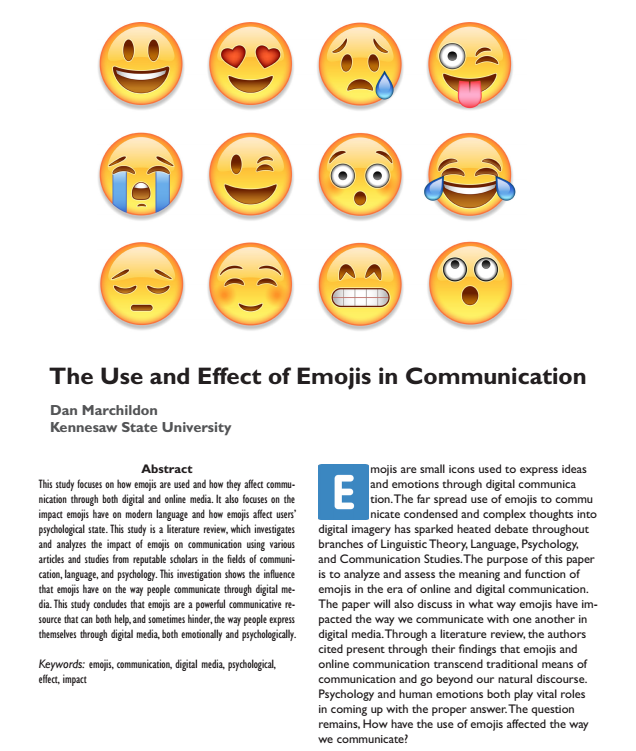

Document Design
Document design refers to the presentation of information in an effective and efficient way. It uses design oriented principles such as visual layout, white space, and color in order to bring together a cohesive and readable document.
SEO Playbook
Above is a PDF link to my SEO Playbook.
Purpose:
The purpose of this project was to visually document my own journey with Search Engine Optimization (SEO) and learning how to leverage SEO in my website’s favor. I created the foundation of my portfolio site through this project.
Skills:
I used document design principles to create my SEO Playbook. I wanted to make sure the information being presented was accessible and effective by using white space, color, and captioned screen shots.
Soft Skills:
After completing the document, I presented my SEO playbook to my SEO & Google Analytics class. It’s important to be able to effectively communicate and present your work and ideas to your peers and employers.
Reflection:
Not only did this project help me create my portfolio site, but it helped me learn and understand the importance of SEO. Creating the playbook itself also helped me with implementing visual design elements into my work.
The Use and Effect of Emojis in Communication
This is a Literature Review and Research Paper I wrote for a Communication Research course.
Purpose:
The purpose of the paper was to analyze and discuss the topic of Emojis, specifically how they have affected the way we communicate through digital mediums.